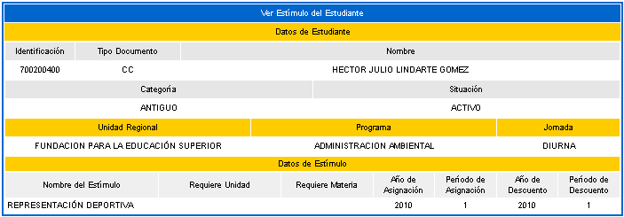

1.18 CONSULTAR SANCIONES ESTUDIANTE
Esta funcionalidad permite que el estudiante consulte la información relacionada con las sanciones disciplinarias que le haya asociado un usuario con rol administrador.
1.19 INFORMACIÓN ACADÉMICA ESTUDIANTE
Esta funcionalidad permite que el estudiante consulte información general de los siguientes procesos: Admisión, hoja de vida del estudiante, registro académico, estímulos de estudiante, supletorios.
1.19.1 Datos proceso de admisión.
Esta funcionalidad permite al estudiante consultar la información referente al proceso de admisión que presentó en la institución. En el siguiente ejemplo se ilustra que el alumno presentó una entrevista y las pruebas ICFES.
Esta funcionalidad permite que el alumno vea un resumen de la información de: Datos personales, de ubicación, de extranjería, listado de familiares, estudios secundarios, estudios universitarios y de postgrado, publicaciones, idiomas, experiencia como profesional, docente e investigador, asociaciones científicas, referencias, información financiera, pasatiempos, información académica. Dispone de la opción Imprimir.
Opción Imprimir: Esta opción permite al estudiante realizar una impresión en formato pdf, en el cual se muestra un resumen de toda la información que tiene diligenciada el alumno dentro del sistema.
1.19.3 Consultar registro académico.
Esta funcionalidad permite que el alumno consulte las asignaturas que ha visto y cursado en los diferentes periodos académicos establecidos en la institución. Dispone de la opción Imprimir.
Opción Imprimir: Esta opción permite al estudiante realizar una impresión en formato pdf, en el cual se muestra un resumen de las calificaciones obtenidas en su trayecto académico en la institución.
1.19.4 Estímulos de estudiante.
Esta funcionalidad le permite al estudiante consultar los estímulos que se ha ganado bien sea por una representación deportiva, cultural o académica.

Funcionalidad que permite mantener un seguimiento de los diferentes supletorios que ha presentado el estudiante. Al dar clic sobre esta funcionalidad, el sistema muestra el listado de supletorios asociados con el período académico, fecha de aprobación, tipo evaluación, descripción de la evaluación, nota, peso y estado.
2. GESTIONAR OFERTA DE MATERIAS
Funcionalidad que permite que el estudiante se inscriba a una de las materias ofertadas como curso de vacaciones o de verano. Estos cursos pueden ser de dos tipos: Uno se comporta como curso vacacional que verifica que la asignatura exista en el pensum, el segundo corresponde a un curso libre que no pertenece al pensum del estudiante. Esta oferta se abre una vez se ha realizado el cierre académico. Inicialmente el alumno debe seleccionar el programa de su interés y luego dar clic sobre la opción Continuar.

El sistema despliega una interfaz en la cual se listan las solicitudes realizadas por el estudiante, si no existen debe agregarlas. En el siguiente ejemplo el alumno ya asoció una solicitud de acuerdo a sus necesidades académicas. Se dispone de la opción Agregar.
Se debe tener en cuenta que todos los estudiantes pueden realizar diferentes solicitudes de acuerdo a las ofertas realizadas por el director de programa. Entre estas ofertas se pueden encontrar cursos vacacionales que validan directamente la estructura curricular del pensum del alumno, o cursos libres en los que todos los alumnos pueden participar, pues estas asignaturas no pertenecen al pensum. En el ejemplo, el estado de la solicitud se encuentra PENDIENTE, cuando el director de programa o persona responsable de la oferta realice el estudio de la solicitud respectiva, procederá a ACEPTARLA O RECHAZARLA.
Opción Agregar: Esta opción permite que el alumno seleccione una de las materias ofertadas. Debe escoger la asignatura y luego dar clic sobre la opción Registrar. El sistema solicita la confirmación del proceso, si la respuesta es afirmativa se emitirá un mensaje indicando el éxito del mismo.
Cuando la solicitud del estudiante ha sido evaluada y aprobada, este estado puede ser corroborado realizando nuevamente la consulta en la materia de su interés tal como se muestra en el siguiente ejemplo:
Funcionalidad que le permite al estudiante realizar un proceso anterior a la matrícula académica en línea. Se ingresan las materias propias del pensum y las componentes de bancos (si los hay dentro del pensum). Se activa con la habilitación de fechas en el Calendario Académico. Estratégicamente este proceso permite saber con cuántos cupos cuenta y cuáles son las asignaturas que tiene que programar el siguiente periodo académico, para poder ir gestionando los docentes, recursos físicos y clases semanales. En algunas situaciones este proceso sirve de apoyo para el cálculo del valor de la liquidación del alumno, en este caso no debe haberse ejecutado el cálculo de las liquidaciones para dicho programa.
Inicialmente el sistema despliega una interfaz en la cual no se listan materias. Para ello debe dar clic sobre el ícono Matricular.
Al dar clic sobre el ícono Matricular, el sistema despliega una interfaz en la cual se listan las asignaturas que el estudiante puede matricular. Para que las materias se muestren no requiere que se haya realizado el proceso de demanda al estudiante ni que estén construidas las clases semanales. Debe elegir la materia y luego da clic sobre la opción Registrar.
Cuando las materias son registradas, el sistema muestra el listado de materias matriculadas actualizado. Para terminar el proceso debe dar clic en la opción Finalizar.
Al finalizar el proceso, el sistema habilita un mensaje de advertencia que avisa al estudiante sobre la generación de la liquidación.
Al terminar el proceso el sistema genera un formato de la liquidación, con el valor a pagar. Se aclara que este formato depende de la configuración Regional que haya parametrizado la institución.
4. CONSULTAR LIQUIDACIÓN DE ESTUDIANTE
Esta funcionalidad permite que el estudiante consulte los conceptos, fechas de pago, cuentas bancarias y el estado de la liquidación del programa en el cual se encuentra matriculado y activo dentro de la institución. Una vez ha dado clic sobre ésta función, debe seleccionar el programa de su interés y luego dar clic sobre la opción Continuar.
La siguiente imagen se activará si se encuentra activo un parámetro global que permite que el sistema actualice la liquidación al instante de ser consultada.
En caso contrario, el sistema genera una interfaz que muestra los datos básicos y las liquidaciones del alumno. Debe seleccionar uno de los registros de las referencias de pago y dar clic sobre la opción Continuar.
El sistema despliega una interfaz que muestra un informe detallado de la liquidación emitida para el estudiante. Puede consultar los conceptos liquidados, que incluyen todos los recargos designados tales como: derechos de matrícula, derechos complementarios: seguro estudiantil, carné estudiantil, estampillas, entre otros. Además, se listan los descuentos aplicados, o estímulos otorgados por el administrador en el módulo de Estímulos. También se muestran las fechas límites para el pago y los bancos con las cuentas habilitadas para realizar las consignaciones. Dispone de la opción Imprimir.
Opción Imprimir: Esta opción permite al estudiante realizar una impresión en formato pdf, en el cual se muestra un resumen de la liquidación que ha sido generada por la institución.